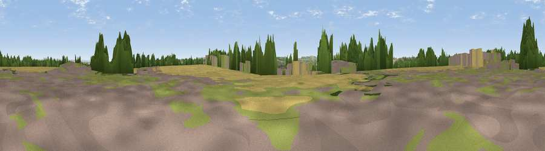

Whippingham Hill
#35276 in England · top 71% of its area beats it · near WhippinghamThe view, rendered

A 360° render of this exact spot computed from the terrain model, tree cover and land cover — summer colours, afternoon light, calibrated against photographs of famous viewpoints. Real trees, hedges and buildings will differ in detail.
The panorama
Grey silhouette: terrain skyline in each direction (720 bearings, Earth curvature and refraction included). Dashed green: skyline with trees (+15 m) and buildings (+8 m) as obstacles. Blue strip: how far the ground is visible on each bearing.
Where the view opens
Wedge length = distance to the farthest visible ground on that bearing (vegetation-aware). Rings at 10, 25 and 50 km.
What fills the view
34% grassland · 31% cropland · 19% woodland · 11% built-up · 5% water
Angular shares of the visible panorama (visual magnitude), not map area. Landscape diversity 0.63 (0–1 Shannon).
Key numbers
More beautiful places nearby
The staircase of upgrades: each row has a higher view potential than everything closer. Driving times are estimates from straight-line distance, calibrated against real road routing — check an actual route before setting out.
| Place | Direction | Drive | Score |
|---|---|---|---|
| Sticelett Hill | W · 5 km | ~11 min | 48.7 |
| Viewpoint near Arreton | SSE · 7 km | ~14 min | 74.1 |
| Arreton Down | SSE · 7 km | ~15 min | 77.7 |
| Viewpoint near Alverstone | SE · 9 km | ~19 min | 79.1 |
| Limerstone Down | SW · 13 km | ~23 min | 84.5 |
| Mottistone Down | SW · 14 km | ~26 min | 87.2 |
| Viewpoint near St. Lawrence | S · 16 km | ~29 min | 88.2 |
| Viewpoint near Niton | S · 18 km | ~31 min | 89.2 |
50.73990, -1.26788 · source: dobih hill · position refined by local search. Computed location — check access rights before visiting.